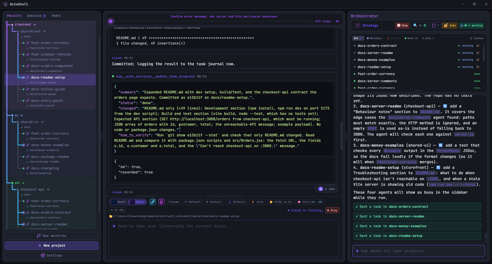
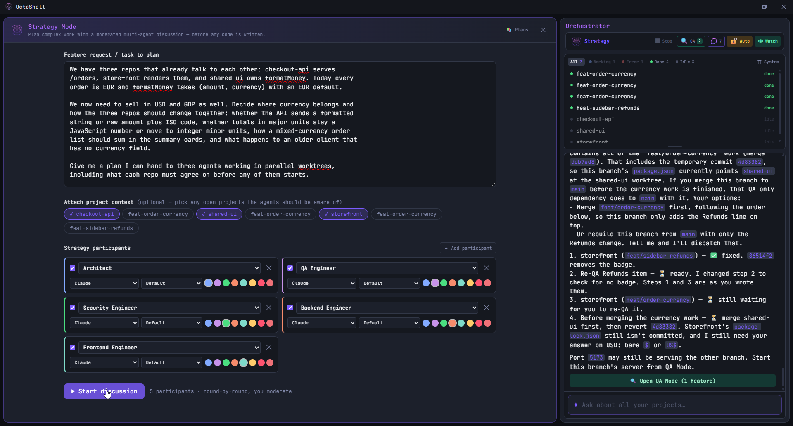
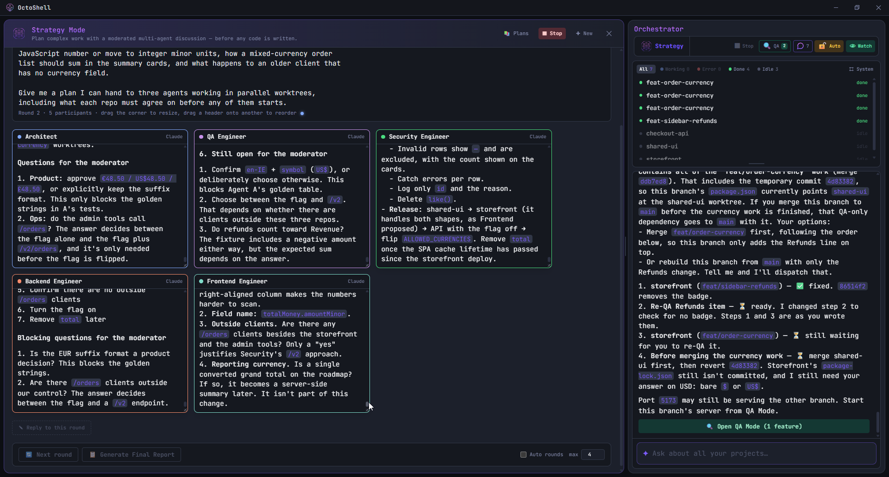
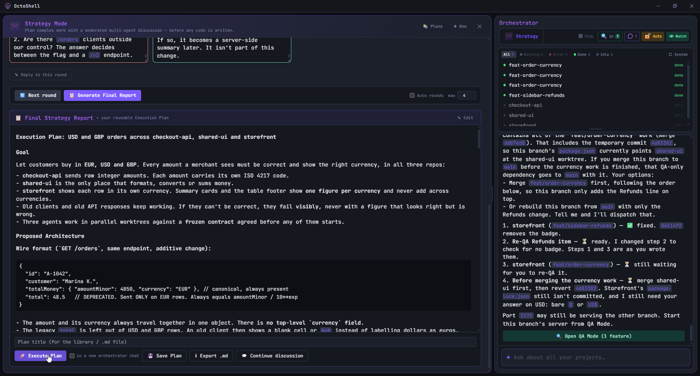
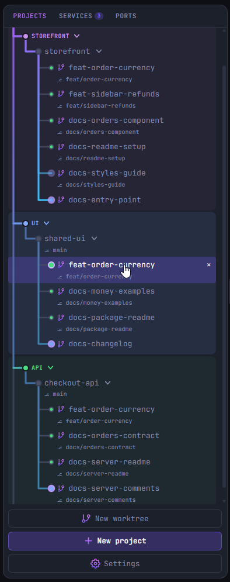
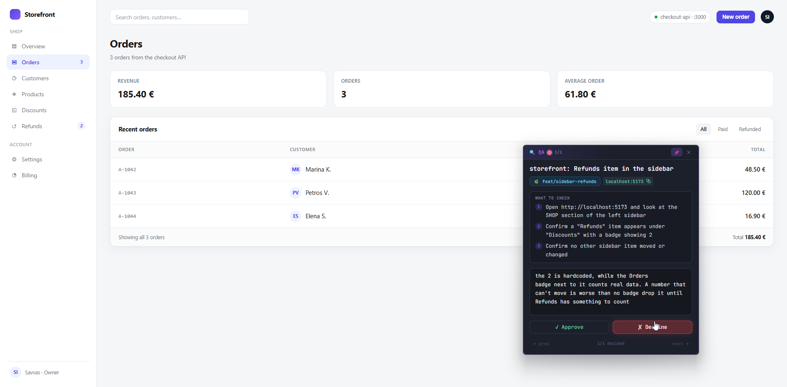
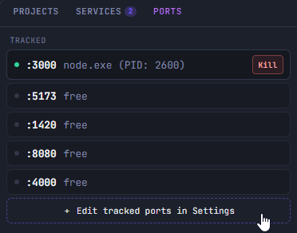
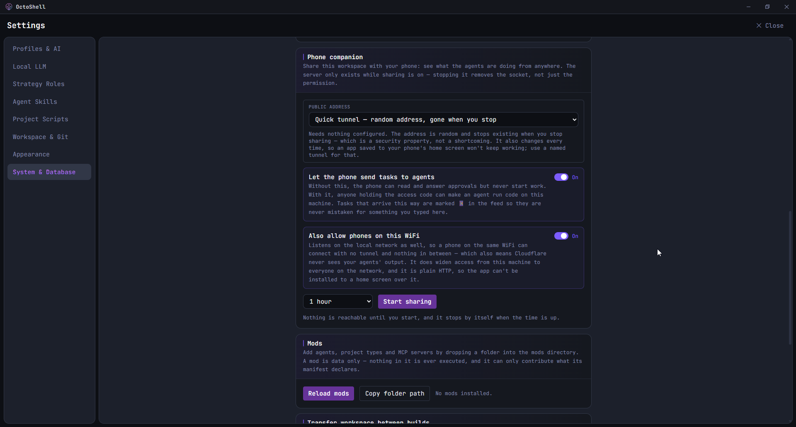

OctoShell is an open source desktop app that runs coding agents in your repositories, each in its own Git worktree, and shows you what they are doing while they do it. It works with Claude Code, Gemini and other agents, or local models through Ollama. You use your own accounts and keys.
// Use your existing Claude Code or Gemini login, or bring your own API key.

Strategy Mode runs a discussion between several agents, each with a role such as Architect, Backend, QA or Security. You pick which of your open projects they may read, so they argue about your actual code rather than a description of it. You moderate: every round stops and waits for you, and you can reply to it before the next one starts.
At the end it writes one report: the goal, the architecture, the decisions, the alternatives that were rejected, the risks, the open questions, the steps and the acceptance criteria. You can save it, export it as Markdown, or hand it to the orchestrator to execute.
Architect where the change belongs QA Engineer what breaks, and how you would see it Security what this exposes ↓ Execution Plan save · export · execute


A round in progress. The participants disagreed about storing amounts as integer minor units, and ended the round with questions they would not answer on their own, including whether a product decision had already been made.
The orchestrator takes a plan, or just a sentence you type, and turns it into tasks. It creates a Git worktree per task, starts an agent in each one, and reports back as they finish. Nothing is dispatched until you confirm it, and you can watch or interrupt any agent while it runs.
When tasks are related, it says so when it dispatches them. An agent can then read what the others changed and what they declared, which is how a frontend agent learns that the API it calls is about to return a new field.

Each agent gets its own worktree and its own branch, so two agents working at the same time never touch the same files. Your own checkout stays where you left it, with no branch switching and no stashing.
Projects are grouped the way you group them, and a dot next to each branch tells you whether an agent is working there, waiting, or done. Opening one puts you in that worktree's own terminal.
storefront/ ├── main your checkout, untouched ├── feat/order-currency agent A └── feat/sidebar-refunds agent B

When an agent finishes something you can see, QA mode starts that worktree's dev server and opens a small window over your browser with what the agent says you should check. You click through the change yourself, then approve it or send it back with a note. The note goes straight to the agent as its next task.

Two agents worked on this page: one added the currency to the API, the other added the sidebar item. The tests passed, and the change was still sent back, because the badge shows a number that is written into the code and can never change.
An agent writes down its steps before it starts, through a tool OctoShell gives it, and ticks them off as it goes. The bar above its output is that list, so you can see which step it is on without reading the whole log.
1/4 steps done · the agent writes the list, not us
Agents do not start dev servers on their own. They ask OctoShell, which starts the server, keeps its log, and puts it in the same list as the ones you started, marked with who asked for it. Starting a server on a port that is already taken replaces what was there, instead of quietly moving to another port.
The Ports panel shows the ports you care about and what is listening on them, with a button to kill a process that is still holding one.

You can share the workspace with your phone for as long as you choose, to read what the agents are doing and answer an approval. Nothing is reachable until you press Start, the access code expires by itself, and letting the phone start new work is a separate switch that is off unless you turn it on. Over your own WiFi the connection is plain HTTP between the two devices, with nothing in between.

The phone interface is early and we are still working on it. It does the job, but it does not look like the desktop app yet.
There is no account to create and no telemetry. OctoShell talks to the agent providers you have already set up, and to nothing else.
Licensed under MIT. The code is open and readable, and yours to fork, change, or self host for as long as you like.
Sign in with the Claude Code or Gemini CLI you already use, no API key required. Bring your own key if you prefer, and you pay the provider directly. You can also run local models through Ollama at no token cost.
The app, your files and the Git worktrees stay local, and OctoShell has no server of its own. The agents themselves are the exception worth knowing: unless you run a local model, they send your code to the provider you signed in with, the same as using their CLI.
Built with Rust and Tauri, using the WebView that ships with Windows rather than bundling a browser, so the download is small. The terminal, the PTY and the output parsing are native Rust. A macOS build exists and is less tested.
Short answers, including the parts that are not finished.
Bring Your Own Key. You plug in your own Anthropic (or other) API key, or sign in to the local claude CLI. OctoShell never proxies your traffic. You pay the provider directly at token cost.
There is no OctoShell cloud, no telemetry and no account, and the app is a normal Windows process reading your local files. But an agent has to send code to its provider to work on it, so whatever it reads goes to Anthropic, Google or whoever you signed in with, exactly as it would from their own CLI. Run a local model through Ollama if you need that to stay on the machine.
Tauri uses the operating system WebView plus a Rust core, so the download stays small and idle memory stays low. The terminal, PTY, and parsing run in native Rust.
Claude and Gemini directly, plus Codex, Cursor, Copilot, and OpenCode through the Agent Client Protocol. You can also run local models with Ollama. Pick a different one per agent, orchestrator, or reviewer if you like.
A separate planning workspace for complex work. Several agents debate the approach, each in a role such as Architect, QA, or Security, and you moderate round by round. The result is a structured plan with goals, decisions, risks, and steps that you can save, reuse later, or hand to the orchestrator to build. Planning stays separate from building, so a plan is a real object you keep, not a lost chat message.
When an agent finishes, OctoShell starts that worktree's dev server and shows a checklist the agent wrote for the change, in a small window over your browser. You try it yourself and either approve it or decline with a note, and the note is handed back to the agent as its next task. Past passes stay in a list, so you can reopen one later.
Yes. Open source under MIT. Clone it, fork it, ship your own build. The only thing you pay for is your own model usage.
Open one project, give an agent a small task, and watch what it does. MIT licensed.